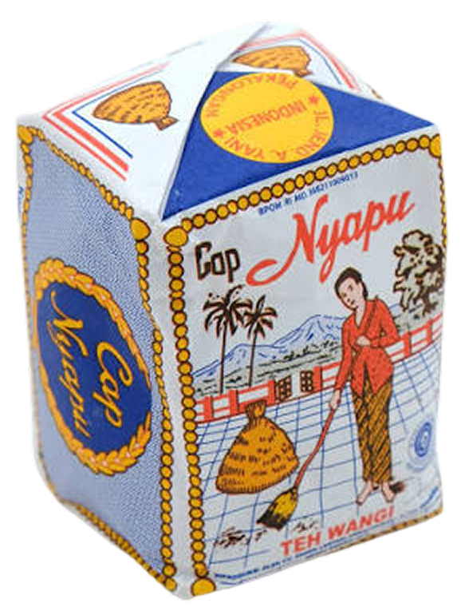

Designing 0–1 products
I’m Jacqueline Tenges, a senior product designer based in Sydney. I design end-to-end across product UX, brand, marketing and all the details in between.
I’m the founding UX designer at Fabra, building browser-based tools that make 3D fashion design feel simple. Outside of product, I make videos about design psychology and why people do what they do.
Matcha (the backup)
Matcha with a little honey. Current favourites are Marukyu Koyamaen Wako and Chigi no Shiro. Yes, I have favourite matcha tins.
Device of choice
My first pick for designing, browsing and basically everything that probably doesn’t need a laptop.
Coffee (the go-to)
Usually a double espresso or iced long black. Nothing beats Sydney coffee and I will stand by that.
Deep work essential
Noise-cancelling Sony headphones. The universal sign for please do not talk to me.
Favourite cuisine
If I had to eat one cuisine for the rest of my life, Japanese wins easily. I could live on sushi and sashimi. Just keep the avo away.
Chief morale officer
Macchiato. 60% snack thief, 40% cuddle buddy. Can’t live without him.
Tea (the comfort drink)
Jasmine tea is my comfort drink. I’ve tried a lot and somehow always come back to this one.